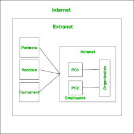

An extranet is a controlled extension of an intranet that allows external users (like partners or suppliers) limited access.
Difference from Intranet
- Intranet = internal users only
- Extranet = internal + selected external users
Use cases
Supply chain systems, client portals, partner dashboards.